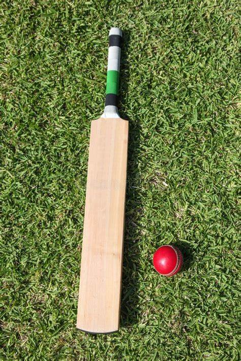
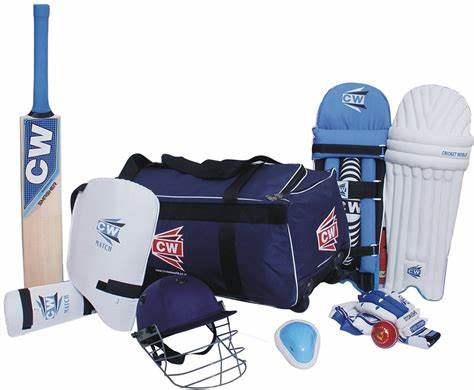

Cricket ground

A cricket field or cricket oval is a large grass field on which the game of cricket is played. Although generally oval in shape, there is a wide variety within this: perfect circles, elongated ovals, rounded rectangles, or irregular shapes with little or no symmetry – but they will have smooth boundaries without sharp corners, almost without exception. There are no fixed dimensions for the field but its diameter usually varies between 450 and 500 feet (140 and 150 m) for men's cricket, and between 360 feet (110 m) and 420 feet (130 m) for women's cricket.
Bat ball
A cricket bat is a specialised piece of equipment used by batters in the sport of cricket to hit the ball, typically consisting of a cane handle attached to a flat-fronted willow-wood blade. It may also be used by a batter who is making batter's ground to avoid a run out, by holding the bat and touching the ground with it. The length of the bat may be no more than 38 inches (96.5 cm) and the width no more than 4.25 inches (10.8 cm). Its use is first mentioned in 1624. Since 1979, a law change has dictated that cricket bats can only be made from wood.
Cricket kit
A Cricket Kit is a bag in which a cricket player carries his/her essential cricket equipment. A cricket kit includes the following items – Batting Pads Thigh Pads Abdominal Guard Chest Guard Cricket Bat Batting Gloves Elbow Guard Helmet A Kit Bag